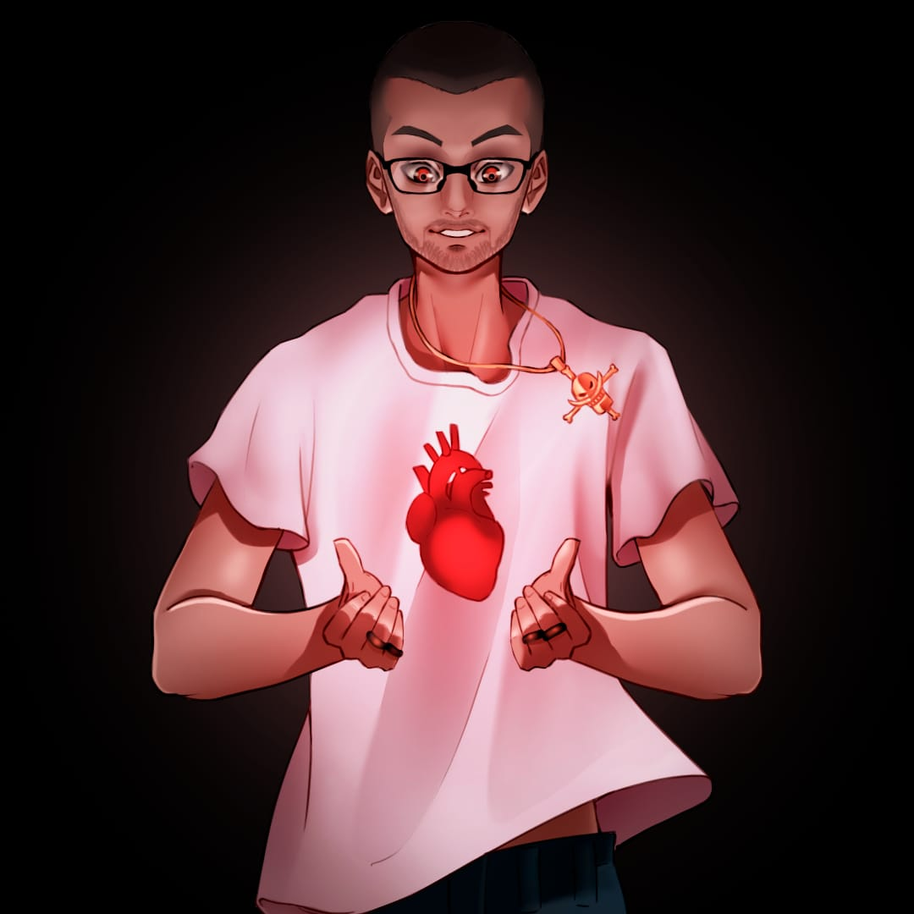

"Bem-vindo ao universo do oVersi"
Descubra o som que mistura influências do trap e da vida urbana. oVersi é mais que música, é expressão, ritmo e autenticidade. Sintonize-se com essa nova voz do trap e prepare-se para viver o que há de mais real na cena.
